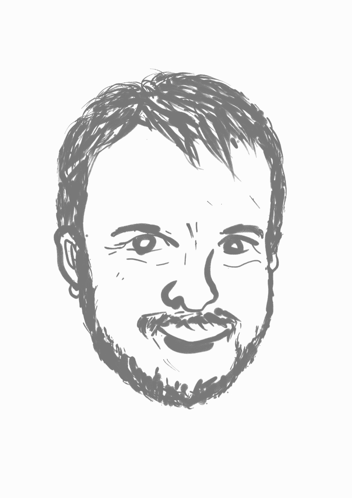

Cybernetics and its Origins
Matthew Holt traces the origins of cybernetics and how it has shaped ideas of feedback, regulation, and autonomy.
Season 1 · Episode 1
Cybernetics and its Origins
What is cybernetics? Historian, Matthew Holt, traces its origins and shows how it has been shaped by and continues to shape ideas of feedback, regulation, and autonomy. Once you listen to this episode, you will realise that cybernetics is not just a historical concept — it is present in familiar systems all around us, from thermostats to cruise control, autopilots, ecosystems, and even social systems.
Listen
Guest speaker

Matthew Holt
Associate Professor Matthew Holt is Deputy Director and Applied Cybernetics Lead at the School of Cybernetics at the Australian National University. He is a historian with experience in academic leadership, business development, and transnational education. Matthew’s research is in the history and theory of cybernetics, design, and systems thinking. His teaching career has encompassed art and design history, visual communication, and media studies. Matthew also has an ongoing creative practice which has included publishing, graphic design, fiction, and has had three of his plays produced.
Quick quiz
Transcript
Open transcript
Speaker 1 (Rebbecca): Today, we have the pleasure of having Professor Matthew Holt.
Speaker 2 (Sungyeon): Professor Matthew Holt is from the School of Cybernetics at the Australian National University.
Speaker 1: Welcome, Matt. It’s great to have you here today. So we would like to have a chat about cybernetics. Can you tell us what is cybernetics in a nutshell?
Speaker 3 (Matthew): I sure can, thanks! But first, I want to say thank you for having me on your pod. What a fantastic initiative! Yeah, my great pleasure to be here and hopefully contribute something interesting for your audience.
Speaker 2: Thank you!
Speaker 3: Right. So what is cybernetics? Cybernetics is what comes from the word “kybernḗtēs,” which is a Greek word, and it means to steer or pilot as in pilot a ship, steer a ship.
It was originally coined in the late 40s – 1948 – by an American mathematician, called Norbert Wiener . You may have heard of him, of course. And like I said, he coined the term in 1948, and he defined it as the “theory of control and communication in animals and machines”. So his interest was in control. You only control things through communicating. And hence the connection.
But he thought it could apply to both the human – the biological – and also the machine world. So for him, he also applied his mathematics to engineering applications; in his case very much in communication engineering. And I can explain what that means.
Speaker 1: Yes, of course, please.
Speaker 3: Alright, so let’s just go back to the idea of where Norbert Wiener took this approach. So he was, as I said, Norbert Wiener was a mathematician. His field was in statistics, basically, stochastic mathematics. And what that meant in a very, very broad sense, he was interested in “How do we represent or mathematically understand complex systems that evolve or change over time?” – Systems that themselves are dynamic. Traditional for him too, you know, and this is not particularly a new thing, but for him, traditional mathematics did not capture that those evolving environments involve communication. His idea was that he applied statistics or stochastic forms of mathematics to understand those more complex systems. And for him the central question was, how do – whether it’s a machine, whether it’s a human, whether it’s an environment – “How does that environment or person, or a piece of equipment, electrical equipment, control itself or can be controlled?”
Speaker 2: That’s right.
Speaker 3: And that’s the idea there of feedback. It has to somehow talk to itself to regulate itself, and that’s the point about communication. There’s other, you know, previous examples of regulators within machines – within steam engines, for example. But he saw that premise or principle of regulation or self-regulation as inherent to anything that reasonably has some sort of purpose or conscious intent. And that’s what’s critical for Wiener and early forms of cybernetics as looking at systems or processes that had intention or purpose, or what they call it, telos, and end or goal.
Now that purpose or goal, well, telos, does not have to be conscious of the entity. We might assume it’s certainly often conscious of our purposes, but nonetheless, it has to have some sort of what you mean by some sort of direction; some sort of aim; some sort of function.
Speaker 2: Hmm.
Speaker 3: So how do you know whether that function or purpose or goal is being achieved? Well, only through feedback. And this is the other critical term for Wiener, and again, I’ll call it early cybernetics. I’ll explain what I mean by that in a moment. But for Wiener, that was the essence of cybernetics – study of feedback against some sort of purpose.
Speaker 2: Right.
Speaker 3: So feedback for him, it could be mathematically described. Feedback for him was a matter of, you know, communication engineering, a matter of physics, a matter of mathematics, and so on.
But you can see it in all forms inherent in any kind of complex, relatively complex system that’s trying to achieve some sort of goal. So in a way, to be purposeful, one needs to have a feedback mechanism in place.
Speaker 2: That’s right, yeah. So then it reminds me of an image of, say, ants communicating within themselves using pheromone like a chemical signal to recognise where they’re headed to and where they should be visiting for, say, food. So is it also, can it be also understood as a cybernetic system if that’s the case?
Speaker 3: Very much so, because you’ve got the principles that we mentioned earlier – one is some sort of communication – that’s sure – and that’s happening in your example and then some sense of using that communication to do something to act.
And again to achieve, potentially, some sort of purpose, and the answer might not be sitting around writing out a kind of mission strategy or a purpose statement, statement of purpose, “SOP,” around the table – ants have tables? No. But nonetheless, you can see – this is your field, of course – some sort of idea of organisation. And so for Wiener, anything that’s organised is effectively same as something that’s considered as such.
And there’s other dimensions to that, of course, and the other thing he’s working very clearly, closely, and consciously on was in information theory, so kind of analysis of actually how communication effectively works in any form – whether it’s biological, whether it’s human or it’s mechanical. And he developed those ideas in tandem with Claude Shannon, who was an engineer from Bell Labs who wrote their very famous paper in the late 40s. Again, the same time they knew each other well on the mathematical theory of communication, and that’s become the basis of perhaps all of our communication devices – probably the most significant work of the 20th century, really in some respects, along with Wiener’s book on cybernetics. So that was very closely tied. But it’s kind of important to know firstly where that goes, but also where it’s come from. Effectively what I mean by that is before Wiener.
Speaker 2: Uh-huh.
Speaker 3: So we do assume because he coins the term, he publishes a famous book, he becomes a New York bestseller. It does – it was on the New York Times bestseller list. And also, just after its publication, he thought it was going to be an obscure thing. No, he was in MIT. He wasn’t obscure himself, but he didn’t appreciate the impact it would have, and it got roped into all sorts of different discourses of the time in the 50s, in particular, early 50s, especially around the impact of communication, information technology, and communication engineering on our workplaces or on social systems, and even on a, you know, regular forms or regular lives, and quickly got entangled with the kind of “cybernation”.
But Wiener himself, he openly admits it. It’s part of the book’s dedication to derive a lot of these ideas in his collaborative work, where the Mexican neurophysiologist, called Arturo Rosenblueth, and he knew Rosenblueth well for a long time, they both had connections in Harvard. He would work with Rosenblueth for many, many, many years before the book, during that period, and after. Rosenblueth studied in Harvard. He was at a lab back in Mexico City. And they worked together on neurophysiology, because they could see that the human body itself is a kind of communication system, and when the whole body wants to do certain things, it gets appropriate kind of feedback to be able to achieve those things, like picking up a pencil, walking down the street; it could be pretty simple. Or regulating very complex processes in the body itself. And your heart rate, temperature, all sorts. But what joined all those things together was the nervous system – the communication system.
Speaker 2: Right.
Speaker 3: And so they were both very interested because they both went and attended. Rosenblatt was a student of a biologist, called Walter Cannon.
And Walter Cannon was in Harvard. The listeners might know him better as the coiner of the term “fight-or-flight.” You know, two kinds of generic and very primary response to some sort of disturbance or threat, you know, “stay or go”, basically. Yeah. And he came up, though it wasn’t his idea solely by any means, but he really did help coin the term around homeostasis. Homeostasis is, again, really central to cybernetics because it’s the state, if you like, the initial conditions or the initial state, to which the systems giving feedback to.
Speaker 2: Right.
Speaker 3: So that could be the purpose, it could be, as I mentioned before, the body temperature – Human body wants to internally regulate the temperature – was it at 38 degrees? And what happens when that gets disturbed? So yeah, sometimes you’ll sweat if it’s a fever. And certain things we’ll do to maintain that temperature. That is homeostatic position. Homeostasis doesn’t mean inert.
Speaker 2: Inert. Ah static, that’s right.
Speaker 3: Yeah, static. It doesn’t have to mean that. It just means whatever that condition is. It could be turbulent. The homeostasis of a certain system couldn’t be constant, is it?
But the feedback mechanisms regulate to get to that in certain conditions in very basic cybernetics systems. So they got the idea from Walter Cannon about homeostasis.
Well, Canon in turn – super interesting – got a lot of his ideas about what happens to the body and the ideas about homeostasis, and fight-or-flight by the way, through his work with trauma victims from the First World War.
Speaker 2: That’s right, yeah.
Speaker 3: People – returning servicemen – from the First World War, he was involved in the First World War himself. He was very interested in how the human body can repair itself and how even psychologically or neurophysiologically and psychologically we can return to some sort of, potentially, some sort of normality or use of the body, and so on. So that’s what I’m going to call a medical origin of cybernetics. But it’s critical. So they – Rosenblueth and Wiener – take those ideas and apply it to neurophysiology more, more directly. So they’re very interested in when the body fails. When the body goes off-track, like when it can’t do things. It could be that we’re looking at probably what we might now understand as early forms of Parkinson, tremors, and nervous tremors, and nervous conditions. And that’s when the feedback mechanisms is effectively failing.
So, this is where, after all this time, this is the point I want to make when we talk about control in cybernetics. In English, that word has got kind of often some bad connotations and perhaps rightly so. But what they were talking about is actually what happens when loss of control. So they were trying to be attentive to what happens when we don’t have control, so we can’t use the normal processes of learning or feedback to do basic things.
So their research kind of emerged as a way to address that issue rather than provide ways in which we go around controlling things. But then they spread that out, or especially, Wiener spreads that out and looks at, you know, control in that sense in all sorts of devices, e.g., mechanical or acoustics was really important to Wiener – incredibly important. A lot of, you know, thinking around acoustics and radio and communication devices, and we’re all familiar with that now, you know, when you get noise in the signal, and so on. And when we think feedback on them in an everyday way, we think feedback from a microphone – In fact, it’s probably more like positive feedback then.
So, it’s, yes, it’s mechanical. Yes, it’s concerned with engineering. And yes, it’s concerned with math. Yes, cybernetics has that origin, no doubt about it. But it is the basic behind that was, what I’m calling, that medical origin. And that persisted throughout his life. So, you know, he did all sorts of interesting medical devices. Famous Boston Arms as an example; a hearing glove, which he tried to set up some ways to translate touch to hearing, and hearing to speech, and back and forth, later in his life. He tried that.
Speaker 2: Yeah, that sounds really fun! So yeah, it sounds like, well, what speaks to me after hearing about the origin of cybernetics is that all those cybernetic systems based on feedback mechanisms aim to kind of preserve or pursue resilience, right? So it can be really applied to a lot broader domains, I would say.
So yeah, I was wondering how then cybernetics is evolving these days in terms of impact and applications. Can you please give us some examples about present applications of cybernetics?
Speaker 3: Sure. To do so, I probably go back again to history.
Speaker 2: Feedback!
Speaker 3: Feedback, yeah! Because within that history, there is different parts that it took. And those are the parts that explain where we are at the moment. So there was a moment, for instance, that I think most, I think in a popular imagination. Let’s call it that. Some aspects of cybernetics are connected, for instance, to work within the military. Now that’s because during the Second World War, Norbert Wiener was commissioned to work on a project – he couldn’t participate in the war himself because he’s too old by that stage, and for the First World War, he was refused from the army.
But, you know, every other scientist in the entirety of America, was put to use. Anyway the one approach that he worked on was about how do you bring down airplanes in real time. So it’s about trajectories, you know, on a moving target across what he calls time series – the mathematics he applied. And he worked with his engineer colleague Julian Bigelow on that project. And for some historians, that’s become the kind of essence of cybernetics. Oh well, he worked out his ideas in a military context. So it must, you know, forevermore, you know, tied to that. And it’s a very localised example in his work. It was a probably underfunded project by comparison to others. You know a tiny amount. It was never put into practice until much later and against his wishes, and so on. So it’s not really a good case to ever to make.
Speaker 1: Interesting.
Speaker 3: Well, to be honest, after the dropping of the atomic bomb on Japan, he came out very, very strongly, along with many other scientists – by the way, most famously, Einstein – and decried that act and from thenceforth in a very public manner, said from then on, “Yeah, I don’t want my research associated with military purposes.” And so that was something he abided by for his life. He still gave talks to the military, and so on. You know, it wasn’t cutting them out. That wasn’t the point. But he didn’t want that, what he called his science, to be applied to those contexts.
Speaker 2: Right.
Speaker 3: So that was kind of an interesting story itself. Then it gets the idea, as we mentioned, feedback, homeostasis, learning within any kind of system, whether it’s human, technological or environmental, they’ve already been around. So he coined his term. So in other groups at similar times exploring ideas of circular causality. So I’m thinking of, again, learning is embedded within organisms so they can learn from past experiences and apply it to what’s going to happen next effectively. So the argument there is that things do not unfold in a linear manner, but in ways in which, like you suggested, return and return back.
The science that’s kind of effectively stripped out of its concerns returned. The reason for that is teleology seemed to be a question of purpose or meaning, which probably lay more directly with the questions of faith, rather than questions of science, which apparently the world works purely only in the clockwork faith, which you can sort of uncover and see the mechanisms. So that the question of purpose is returned to thinking, and that’s really critical.
There was a series of conferences you may have heard of, supported by the Macy Foundation, which again was a medical foundation. And the support of science research in that field for decades in the States. And then there was a series of conferences around circular causality and purpose in the 40s and into the 50s, which looked at all those ideas in the Macy conferences in New York. And Wiener was invited to those because they have been reading his work, and a lot of people at those conferences were in his circle, and they used the word cybernetics to capture all those different concepts and meanings. Wiener himself was a bit of an irascible type, not always getting on with everyone, fall asleep in presentations, you know, call people out.
Speaker 1: Ohh…
Speaker 2: Typical genius…
Speaker 3: You know, good soul. But yeah, didn’t get on with anyone. So he came in once or twice, but that was it. But nonetheless the whole set of ideas that accumulated around cybernetics were really you could see in those conferences. So there was early artificial intelligence researchers. You know, what we might now call computer science. There was neurophysiology. There was what in our probably actually called connectionist AI. People working in cellular automata and self-organising systems and psychology. Very famously in anthropology – Margaret Mead was there. She was a very key figure. The American anthropologist with her partner Gregory Bateson was involved. And that kind of shows you the kind of level of interest in cybernetics beyond the early idea that but it’s also all those others. So they saw in the broad idea of cybernetics applications of vast kinds.
Speaker 2: Yeah.
Speaker 3: How do these people self-organise? How does society self-organise – whatever controls the communication mechanism in that? How do you individually self-organise? How does an environmental system self-organise? Biological or psychological phenomena self-organise. So it was this that a common language had been found. It wasn’t a dogma or a doctrine, because it was too broad, too broad for that and you know, there’s always not a lack of clarity, but a kind of such large applications that you know it could go in different directions and it was also applied almost contemporaneously, to be honest, to what we would now call a grater field: arts, music, and you know, early robotics – all sorts of things. So this actually answers your question because that gives you where a sense of where it went. “It went everywhere!” is the answer!
Speaker 1: You can expand to all kinds of fields now.
Speaker 3: That’s right. It’s hard to think of things that are not cybernetic.
Speaker 1: Yeah, exactly. Everything is cybernetic.
Speaker 3: That’s right. And partly that the success was that it’s also downfall – well, not a downfall, but it’s kind of a problem. It gets swept up in all the different fields and used in those terms, but never kind of came back and consolidated as an independent discipline – it was always a transdisciplinary one.
The other reason, some say, because it’s only US history, it’s not the rest of the world, it’s something to talk about as well. That artificial intelligence research took over all the funding. You know, it attracted all the funding – the government funding, the military funding, and so on. And hence you get the rise of information systems, artificial intelligence, computing over cybernetics. Even though cybernetics itself is largely the origin of those fields, very famously, one of the founders of artificial intelligence, perhaps the coiner of the term – MIT guy – John McCarthy famously coined artificial intelligence at the conference in 1956 to make sure Norbert Wiener wasn’t there, and that the new field wasn’t going to be called cybernetics.
Speaker 1: That’s a lot of effort.
Speaker 3: And he actually specifically says it in his memories of the event. So, it could have been very different and what I mean by that is that you could have got me on talk about this strange field called artificial intelligence. Wow, everyone’s doing cybernetics. OK, hang on. What about artificial intelligence? So yes, could have been very, very different.
Speaker 1: Well, that’s really nice. It’s a very nice sort of story from the early, early beginning of cybernetics and then we go way before and then we come back to the present knowing that now cybernetics actually expanded to everywhere. Well, thank you for that summary. So how did you actually get interested in cybernetics? It seems that, well, you really do have a lot of interest, but how actually, like, when did you first encounter cybernetics?
Speaker 3: The first time I encountered cybernetics was, I think, it’s kind of in the early 90s. It was 1990s, yeah.
Speaker 2: Ohh.
Speaker 1: Not long ago, not long ago, yeah.
Speaker 3: I was doing my PhD and had some friend who was doing a work on looking at communication technologies and media technologies and its influence on how we define a sense of place and community. And so, he was looking at Norbert Wiener, and very particularly, it’s kind of almost famous quote about the reach of the community or the extent of community can be defined by the extent to reach of its communication and its ability to communicate. But in those days cybernetics was, it’s kind of used as – you know, this is actually what I’m interested in – as a kind of almost like a limit case for the way in which you control in the sense I’ve given it can be used; it can be used as social control.
So, the questions we were facing as kind of young PhD students there was how to analyse contemporary forms of social power. And the idea of communication or political system or social system that can use its own mechanisms and feedback to direct itself was seen as a kind of limit case. Is that a bad thing? Or a good thing? And what does that actually mean? So I guess it was sort of that question.
Now, having spent a long time looking at details of cybernetics in its history, including as I mentioned before about its medical origins, but also it’s what we call ideas of cybernation, which is the application of cybernetics to industrial processes, which again, Wiener was very attentive to. So he was, if you read him, he wasn’t defending something called cybernetics. He was saying like, this is what our labour organised our industry and he was very interested in that question and he worked quite closely – but not closely enough, as it turns out – with labour leaders in America at the time, including Walter Reuther who was the head of the largest Workers Union in the States to sort through and look through and think through the impact of cybernetic, self-regulating, automatic technologies on industrial processes, but also on labour force. And he was seriously concerned about the displacement of labour and its replacement by machines.
So for us, even back then and us, I mean looking generation used as a kind of philosophical test case to think about one very fundamental question and that’s – I’ve realised thanks to you two – as reflecting on this before I came into the studio that most of my thinking and research is really and teaching has been about one question, and it’s one question only, and it’s about autonomy. What is autonomy?
Speaker 2: Yeah.
Speaker 3: Because we described autonomy of so many different things that could be self-regulating, self-thinking machines. But it also can mean political process. So what does it mean to be autonomous as a society? Fundamental question of democracy, which is now even becoming even more important; it’s fundamental to learning, to social behaviour, to wellbeing, to have a sense of autonomy.
So what does it mean? For me, cybernetics is ultimately about autonomy. What does it mean to say something is autonomous? How does it regulate itself as it gives itself a purpose and learn? So even then, like in the early 90s, that was the kind of test case he could go this way. It could be this kind of a world that runs itself for bad purposes, and is really, really good at doing so because it’s got the machinery and nation system.
Speaker 1: Sounds like the dark side.
Speaker 3: Yeah, that’s right. Thank you. It’s kind of a dark side. And the other side is that all these concepts and ideas also really do help explain what it means to be autonomous. And for me, that’s a critical question. If you give up autonomy, what? You know, what else do you have? Yeah, so roundabout way to answer the question but that’s what it’s really about.
Speaker 2: Yeah, it’s always fascinating to hear how cybernetics emerged in history and how it influenced and was influenced by other fields over time. But I guess most important thing is that it enables us to speak a common language in understanding a broad range of phenomena, whether it be mechanical, biological, or societal!
Thanks so much for sharing your insights with us today, Matt. We deeply appreciate your time and contribution for Kuberknots.
Speaker 1: Well, thanks!
Speaker 3: Thank you!